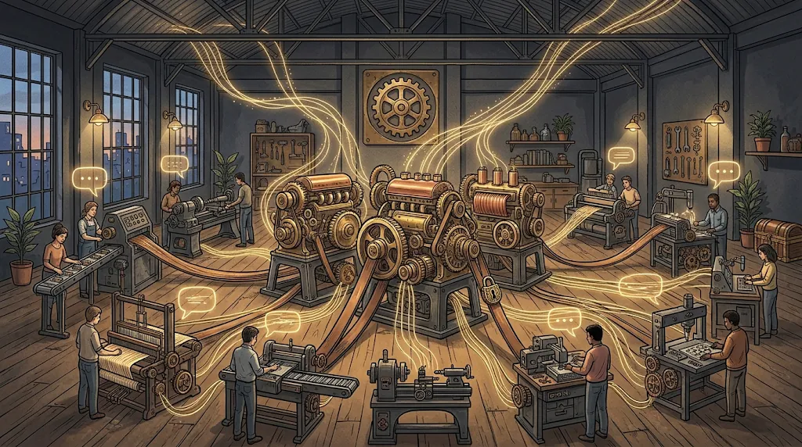

L'assistant d'OpenAI, basé sur les modèles GPT. Le plus utilisé au monde.
- Moteur
- GPT (modèle fermé)
- Vos données
- Cloud OpenAI, États-Unis
chatgpt.com
Guide · édition de novembre 2026
ChatGPT, Le Chat ou Perplexity ne sont pas des « IA » au sens strict : ce sont des interfaces. Derrière tourne un modèle, parfois celui d'un autre. Et c'est lui, pas l'interface, qui décide où partent vos données.
01 · L’annuaire
Classées par façon de travailler. Chaque fiche indique l'éditeur, le moteur qui tourne derrière et l'endroit où partent vos échanges.
modèle ouvertmodèle fermémodèle tiers
L'éditeur construit le modèle et l'interface.
L'assistant d'OpenAI, basé sur les modèles GPT. Le plus utilisé au monde.
chatgpt.com
L'assistant d'Anthropic, reconnu pour l'écriture, l'analyse de longs documents et le code.
claude.ai
L'assistant de Google, multimodal dès l'origine et intégré à l'écosystème Google.
gemini.google.com
Le Chat, l'assistant de Mistral AI, start-up française fondée en 2023. Une partie de ses modèles est ouverte.
chat.mistral.ai
DeepSeek
Laboratoire chinois connu pour ses modèles ouverts, entraînés à bas coût et solides en raisonnement et en code.
deepseek.com
L'assistant de Moonshot AI (Chine), connu pour ses longs contextes et ses modèles K2 ouverts.
kimi.com
L'assistant et la famille de modèles d'Alibaba, dont beaucoup sont publiés en accès ouvert.
chat.qwen.ai
xAI
L'assistant de xAI, la société d'Elon Musk, intégré au réseau social X.
grok.com
Inflection AI
L'assistant d'Inflection AI, pensé pour la conversation bienveillante et le soutien au quotidien.
pi.ai
L'IA greffée sur une plateforme qui a déjà ses utilisateurs.
L'assistant de Meta, intégré à WhatsApp, Instagram et Facebook. Basé sur Llama, puis Muse Spark.
meta.ai
Microsoft
L'assistant de Microsoft, basé sur les modèles d'OpenAI et intégré à Windows, Edge et Microsoft 365.
copilot.microsoft.com
Amazon
La nouvelle Alexa d'Amazon : un routeur qui choisit entre Nova, Claude et Mistral selon la tâche et la langue.
amazon.com
L'assistante de Yandex, présente dans la recherche, le navigateur, le cloud et les enceintes. Modèle 100 % maison.
alice.yandex.ru
Une interface, les modèles des autres.
Moteur de réponse : il cherche sur le web, synthétise et cite ses sources, en s'appuyant sur plusieurs modèles.
perplexity.ai
Venice.ai
Agrégateur axé sur la confidentialité : modèles ouverts, conversations gardées dans le navigateur, filtrage minimal.
venice.ai
Quora
Plateforme de Quora qui réunit de nombreux modèles et bots personnalisés sous un même abonnement.
poe.com

Yiaho
Site français qui donne accès gratuitement à plusieurs modèles d'IA depuis une interface unique.
yiaho.com
Komo AI
Moteur de recherche propulsé par l'IA, sans publicité, pour explorer un sujet en profondeur.
komo.ai
Le modèle tourne sur votre machine.
Logiciel gratuit qui télécharge un modèle ouvert et le fait tourner sur votre propre ordinateur, sans connexion.
ollama.com
 Alice
Alice ChatGPT
ChatGPT Perplexity
Perplexity Claude
Claude Kimi
Kimi Qwen
Qwen Meta AI
Meta AI Ollama
Ollama Le Chat
Le ChatGemini a d'abord porté le nom de Bard ; Copilot celui de Bing Chat ; Alice existait avant l'IA générative et a basculé sur YandexGPT.
02 · Les trois couches
On confond souvent « une IA » et « un modèle ». Tout le paysage tient en trois couches empilées : le moteur, ce que vous voyez, et l'endroit où vont vos échanges.

C'est le moteur, ce qui « pense ». Un réseau de neurones géant, entraîné sur d'immenses corpus. Concrètement, un fichier de poids de quelques gigaoctets à plusieurs centaines. Ouvert, on peut le télécharger et le faire tourner soi-même ; fermé, seul son éditeur peut l'exécuter.
C'est ce que vous voyez : le chat, la barre de recherche, l'assistant vocal. Certains éditeurs font tout (OpenAI, Anthropic, Mistral, DeepSeek). D'autres ne font qu'assembler une interface branchée sur les modèles des autres (Perplexity, Venice, Poe).
C'est là où vont vos échanges. Ce n'est pas l'interface qui en décide, mais qui fait tourner le modèle : l'éditeur, une interface tierce, un réseau de GPU, ou votre propre ordinateur.
03 · Le grand schéma
À gauche les familles de modèles, à droite les interfaces. Survolez ou touchez un nom pour isoler ses liens. Un même modèle alimente souvent plusieurs interfaces concurrentes, et certaines interfaces n'ont aucun modèle à elles.
Faites glisser le schéma
État du paysage au 3 novembre 2026. Les statuts ouvert/fermé évoluent vite : ils sont datés.
04 · Ouvert ou fermé
Peu d'entreprises publient tout ou rien. La vraie question est quelle partie de la maison reste derrière la porte.
Même le modèle phare est publié. Ses poids alimentent directement d'autres interfaces.
 Moonshot
Moonshot Z.ai
Z.aiCœur ouvert (Apache 2.0), licence commerciale au-delà d'un seuil de revenus.
Mistral AILa frontière reste fermée, les modèles de diffusion sont ouverts : inonder l'écosystème sans livrer le phare.
 GoogleMeta
GoogleMeta Alibaba
AlibabaAucun poids téléchargeable aujourd'hui : les modèles ne tournent que sur les serveurs de l'éditeur.
OpenAIAnthropicLe statut d'un modèle est un fait daté : Mistral a ouvert son Medium, Alibaba a refermé son Max, xAI a refermé après Grok-1.
05 · Vos données
Quatre routes possibles. L'apparence de l'interface ne dit rien de la destination : il faut regarder qui fait tourner le modèle.
VousInterfaceServeurs de l'éditeur
Vos échanges vont chez l'éditeur, liés à votre compte. GPT, Claude, Gemini, Grok : clouds américains. Les applis DeepSeek, Kimi et Qwen : serveurs en Chine, même si les poids sont ouverts.
VousInterfaceÉditeur du modèle
Les serveurs de l'interface d'abord, puis l'éditeur du modèle choisi. Perplexity applique une rétention classique. Venice ne garde rien, mais si vous choisissez un modèle fermé, son éditeur voit quand même la requête.
VousVos serveurs
Les poids sont téléchargés et tournent dans votre entreprise ou votre administration. Tout reste chez vous : c'est la voie des modèles nationaux et souverains.
VousVotre ordinateur
Avec Ollama ou Opera, le modèle tourne sur votre machine. Rien ne quitte l'ordinateur, même sans connexion.
Moteur de recherche augmenté. Son modèle Sonar, dérivé de Llama, cohabite avec GPT, Claude, Gemini, Grok et Kimi : six flèches entrent chez lui dans le schéma.
Aucun modèle maison : Venice fait tourner des modèles ouverts sur des GPU décentralisés, avec zéro rétention. Rien n'est stocké sur ses serveurs.
La règle à retenir
Vos données restent là où tourne le modèle. Choisir une IA, c'est choisir qui fait tourner le modèle.
Les écosystèmes nationaux hors États-Unis et Chine : Yandex, Naver, Falcon, Sarvam…
Installer un modèle ouvert chez soi, pas à pas.
Ce qui se passe à l'intérieur d'un modèle de langage.
Données : synthèse structurelle « Modèles, interfaces, données », novembre 2026 (sites officiels, documentation des éditeurs, presse spécialisée). Naver (HyperCLOVA X, Corée du Sud) suit le même schéma que Yandex sans être dessiné ici. Logos : propriété de leurs détenteurs respectifs.